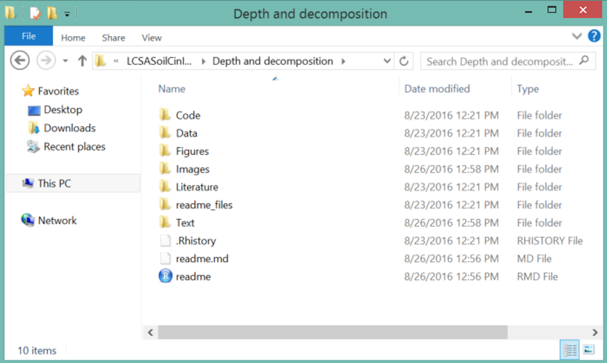

When you open a bad folder
Why
If you have to do something once, you are going to have to do it 1000 times
* analysis is iterative
* requests/collaborators are unpredictable
* data grows
If you can’t reproduce what you did, it’s impossible to find the mistakes
If you can’t reproduce what you did, it is not credible
Why
- If you can reproduce what you did, others can too
- They can either use the information to perform similar analyses, or build upon all the work you did
The best thing you can do is to start every project with the goal and mindset of reproducibility.
Steps to reproducible research
Karl Broman, Department of Biostatistics & Medical Informatics
University of Wisconsin-Madison
kbroman.org
@kwbroman
Everything with a script
- A script is a sequence of code that performs a specific job
- Pointing, clicking, dragging, dropping, copying, pasting are not reproducible
- Code tracks and records every step you take
- Get data -> convert file -> edit file -> clean data -> analyze data
- Still possible to write terrible scripts though
Organize your data and code
- Use one directory (local) and one repo (GitHub) for one project
- Put code and data in separate subdirectories

Organize your data and code

Organize your data and code
- Use relative paths that refer only to the project directory and not to your specific computer
Good: images/friends.gif
Bad: C:/Users/rdietzel/Documents/materials/week_02/images/friends.gif
This will save your friends a lot of trouble when they run your code on their computer
Organize your data and code
Write ReadMe files
* The ReadMe file is the first to be seen or sought
* Describe the files in your folder, especially which order to run them in
* Leave a map for those that come after you, or your future self
Automate the process
- Aim to write a script of your scripts
- Rerunning your project happens with the touch of a button
- Broman recommends GNU Make, but R is sufficient for this course
Turn scripts into reproducible reports
- Include enough text in your scripts that future you and anyone else will know why you did what you did
- We will devote time to reproducible reports later in the semester
Turn repeated code into functions - more later
- A function is a command made up of other code, e.g. mean, standard deviation
- Your code will be a lot easier to read and faster to write
- Package up these functions to share and use later
Use version control
- You are already doing this with GitHub!
Details, from the very beginning
Data collection
- Reproducibility begins before you head to the field or lab
- Establish a recorded protocol complete with references
+Test if everyone can follow the protocol before they are left on their own
+Bring the protocol with you to the field and record deviations +Name everything that is unique – each chamber, depth, or rep
- Take notes on anything that might be slightly relevant, but don’t go overboard – you should have established most of the required information before you got to the field/lab
- Take so much pictures/video in the field/lab
Do not assume you will remember anything. Remembering indicates there is a piece of data that exists only in your head!
Collected data
- If your data exists only on paper – scan or photograph the paper
- There will be an error and you’ll need to refer back
- Make data entry as easy as possible for those entering data
- If data collection was automated, keep it just as it comes in
Never manually change your raw data
Be consistent
- Use consistent codes for variable names
- Not “Soy”, “soy”, “Soybean”
- Use a single fixed code for any missing values
- NA, NAN, . . .
- Use consistent codes for categorical variables
- Location - “Arm”, “Lewis”, “Lew”
*Use common data layout if you have multiple files
Write dates as YYYY-MM-DD

Excel is a date monster

Be very, very careful.
Fill in all of the cells
- If a cell is blank, no one knows if it is intentional or if the data are missing
- Don’t depend on one cell to cover the information for several cells, you may understand, but a computer won’t
Put just one thing in a cell
- Separate the information as well as you can
- For example, don’t combine block “A” and plot “23” as “A23”, or you will need to separate that information later
Make it a rectangle
- Rows should correspond to identifiers (blocks, treatments, reps)
- Columns should correspond to variables
- If you treat your spreadsheet like a virtual desk with data and calculations and graphs spread all over the place, even other humans are going to have a tough time
More on tidy data later
Create a data dictionary
- Keep a separate file that explains what everything is (also in a rectangle)
- Exact variable name
- Version of name used for visualization
- Long explanation of the variable
- Measurement units
No calculations in raw data files
*If you just can’t wait, make a copy and create your messes there
Don’t use font color or highlighting as data
text here

- No one can be sure what you mean
- Computers can’t pick up on it
- Words provide more information, so include notes in a different column
Choose good names for things
- So hard
- Don’t use spaces
- Avoid special characters($, @, %, #, &, *, (, ), !, etc.)
- Short, but meaningful
Make backups
- Best policy is three locations
- One local (hard drive/server)
- One off-site (GitHub)
- Another one off-site, preferably hosted in a different region (Dropbox, Cybox)
Save data in plain text files
- This is a non-proprietary format, so anyone can open it at any point in the future
Totally worth spending class time on file naming
File names should
be machine readable
be human readable
play well with default ordering
Machine readable means
Regular expression and globbing friendly
* Avoid spaces, punctuation, accented characters, case sensitivity
Easy to compute on
* Deliberate use of delimiters
Globbing

Human Readable
Name contains info on content
(include examples of bad names I have)
Plays wells with default ordering
Put something numeric first Use YYYY-MM-DD for dates
Left pad other numbers with zeros
* 01 instead of 1